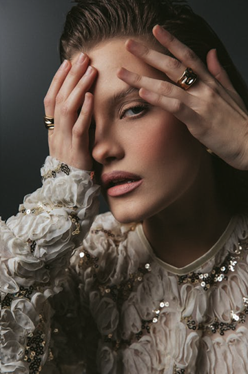

Clara and Stone
15 views
And if you need more…
- Run as many events as you need
- Protect your time between appointments
- Reduce no-shows with automatic reminders
Free Trial Session
Needs review
You’ve run out of free flows.